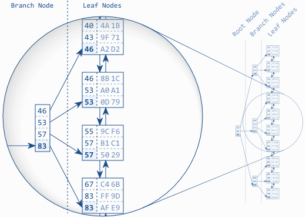
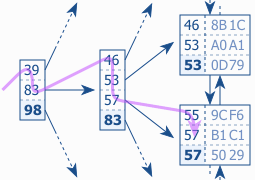

Andrei Mackenzie @ clypd
December 11, 2014
SQL identifies what data to query.
Indexes can help with how.
This is useful for targeted SELECT and UPDATE queries.
Good indexes are often more important for good performance than hardware or file system tuning.
Application domain knowledge is required for good indexing.
Index addition/maintenance is part of feature development.
An index establishes logical ordering in addition to the physical ordering of data on disk:
A logical order is established, the database blocks for the leaf nodes are not stored in index order
A balanced search tree is used to find leaf nodes efficiently
diagram credit: use-the-index-luke.com
Traverse the B-tree
diagram credit: use-the-index-luke.com
Indexes on column(s) with high cardinality are better at filtering during tree traversal.
High cardinality: e.g. unique IDs, strings with little chance of duplication
Low cardinality: status flags, Booleans, etc.
Demo!
Indexes: Used by queries that filter by columns at the 'beginning'
This is akin to a telephone directory: Can lookup by last name, but lookup by first name requires a different structure